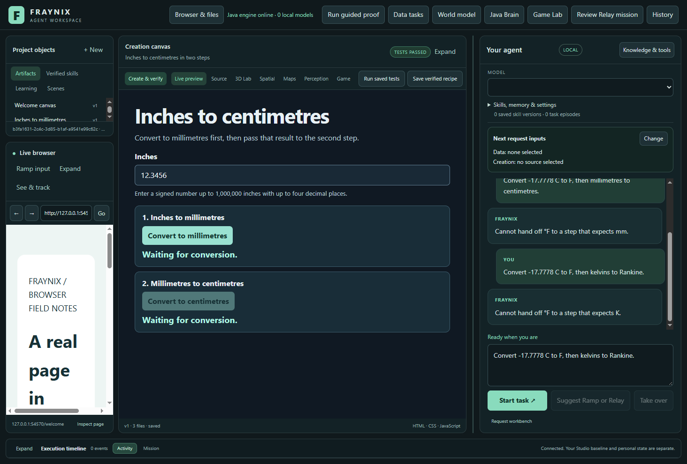
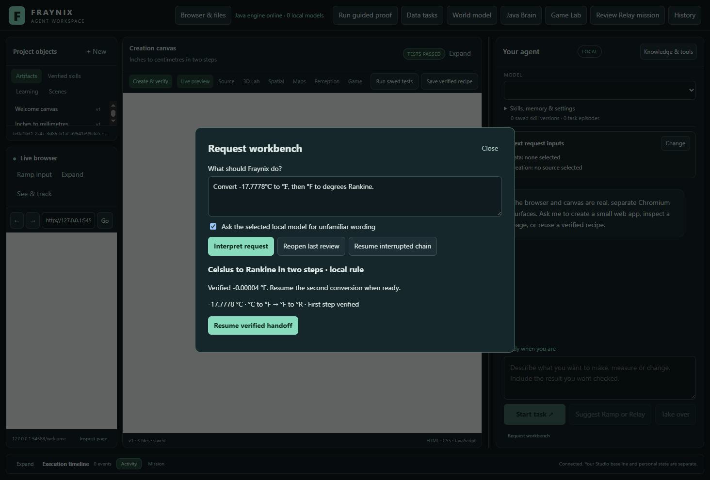
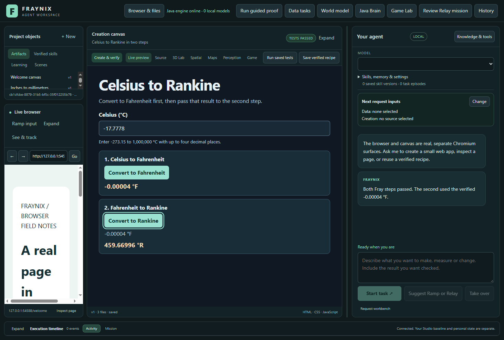

Resume a verified Fray handoff after desktop restart
Convert Celsius to Fahrenheit and then Rankine in one Chat request. The Workbench can save the verified intermediate and resume it after the desktop stops.

Chat refuses millimetres and kelvins as substitutes for Fahrenheit

The saved Fahrenheit handoff recovered after restarting the desktop

The completed temperature chain and its exact intermediate
System files
Open source